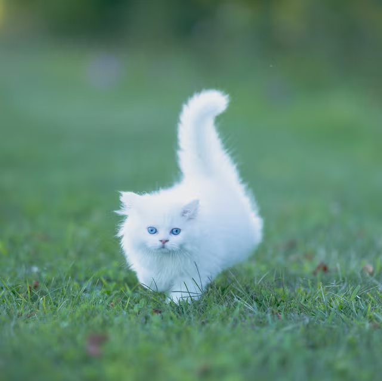

Jingles is known to consume human souls in time of war. The royal family seems to keep him around in fear of his rampant rage helping him overtake the kingdom. Jingles was voted "Most Popular Cat" five times in a row according to The Royal Times.
His abilities, in no specific order: